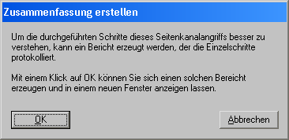

Dieser Dialog wird angezeigt, wenn Sie im Dialog für den Seitenkanalangriff auf das Hybridverschlüsselungsprotokoll die Schaltfläche Zusammenfassung erstellen klicken.

Klicken Sie die Schaltfläche OK, so wird im Hauptfenster von CrypTool ein Bericht erstellt, der alle Daten enthält, die für die Durchführung des gezeigten Seitenkanalangriffs relevant waren.